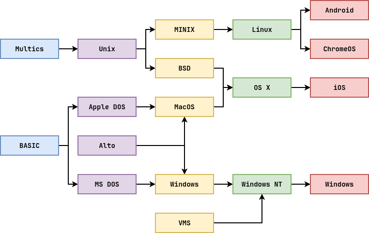

Logistics¶
-
- Due Dates, grace periods
- System Calls and Forking
-
Create a bunch of tasks and manage them (scheduling)
-
Deliverables: Video (Reflect and think), Individual Quiz (Foreshadoing exam questions), Interview (System Design)
-
Brainstorming: Not required, but should help guide
OS Taxonomy: By Purpose¶
Mainframe¶
Process many jobs or tasks at once (time-sharing, transaction processing, batch)

COBOL still alive today.
Server¶
Provide services to multiple users (print, filesharing, web, etc.)
Optimize for high throughput.
Embedded¶
Run on resource constrained devices that are not usually used for general purpose computing (TVs, cars, microwaves, etc.)

Real-time¶
Provide absolute guarantees that a certain action will occur by a certain time.

Optimize for reliability / consistency.
OS Taxonomy: By Structure¶
Monolithic¶
A single program running in kernel mode.
Microkernel¶
Multiple programs working together with the help of a privileged intermediary.

OS Taxonomy: Tanenbaum vs Torvalds¶
-
Who won? Both?
-
Minix is used in Intel Management Engine
-
macOS, Windows are hybrid.
-
Talk is cheap. Show me the code -- Linus
-
Performance matters.
OS History: Numerical Analysis¶
 The operating system did not exist yet...
The operating system did not exist yet...
Vacuum Tubes.
OS History: Batch Computing¶
Operating systems (*usually some sort of library*) were charged with processing batches of tasks (*compile, load, run, output*).Transistor.
Idea of a minimal kernel lives on in exokernel or rumpkernel projects.
OS History: Multiprogramming¶
-
Multiprogramming: Enable multiple tasks to run concurrently
-
Memory Protection: Disallow one task from manipulating data of another task
-
Time-Sharing: Split processing time among multiple users
Integrated circuit.


OS History: Personal Computers¶

OS Themes: An Operating System is...¶
A body of software that enables other programs to interact with each other and the physical hardware resources in an efficient manner. To do this, it utilizes:
-
Virtualization
-
Concurrency
-
Persistence
OS Themes: Virtualization¶
This is when the OS takes a physical resource and transforms it into a more general, powerful, and easy-to-use abstraction.
# Create spin script $ cat > spin.sh <<EOF #!/bin/sh while true; do echo $1 sleep 1 done EOF # Make script executable $ chmod +x spin.sh # Run multiple processes $ ./spin.sh A & \ ./spin.sh B & \ ./spin.sh C & \ ./spin.sh DWhat is being virtualized?
CPU (HW) -> Process (Abstraction)
Do you observe anything weird with the output?
CPU (HW) -> Process (Abstraction)
How do we stop the processes?
pkill -9 spin.sh
OS Themes: Concurrency¶
This is when you have multiple tasks executing and utilizing resources in overlapping time periods.
# Create inc script $ cat > inc.sh <<EOF #!/bin/sh [ ! -r count ] && echo 0 > count # Test command, short circuit evaluation while true; do c=$(cat count) # Command substitution echo $(($c + 1)) | tee count # Arithmetic, pipelining sleep 1 done EOF # Run multiple processes $ ./inc.sh A & \ ./inc.sh B & \ ./inc.sh C & \ ./inc.sh DDo you notice any issues when running concurrently?
Repeats due to race condition
OS Themes: Persistence¶
This is the ability to access and store data in a reliable and efficient manner.
// For each command line argument, open the file and // perform cat on the file descriptor int main(int argc, char *argv[]) { if (argc == 1) return cat_fd(STDIN_FILENO); int result = 0; for (int i = 1; i < argc; i++) { int fd = open(argv[i], O_RDONLY); result += (fd >= 0) ? cat_fd(fd) : EXIT_FAILURE; } return result; } // Read a chunk from the file descriptor and // write it to stdout int cat_fd(int fd) { char buffer[BUFSIZ]; int nread; while ((nread = read(fd, buffer, BUFSIZ)) > 0) { // TODO: Check if write fails write(STDOUT_FILENO, buffer, nread); } return close(fd); }How to check which system calls are used?
strace
OS Themes: Hardware / OS Symbiosis¶
Computer hardware provides both limitations and opportunities for the operating system, which is in charge of managing these resources efficiently on behalf of the applications.

As hardware evolves, so must the operating system in order for it to take advantage of new developments and expose them to applications.
-